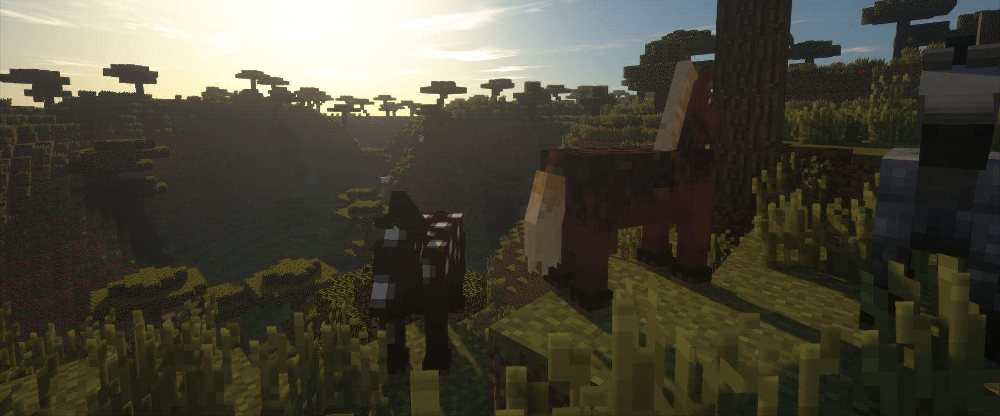

ModCreatorALPHA
DOWNLOAD
ALPHAはまだ不安定です。開発段階なので、使用は自己責任で。
ModCreatorは最新のバージョン（Latest）のみサポートしています。
また、自動アップデートを有効にするためインターネットに繋いだままModCreatorを実行してください。
自動アップデートはUpdater.jarを削除することで無効にできますが、最新版のみサポートですので推奨しません。
Latest
ModCreator ALPHA0.0.1
for MC1.7.10 | | ALPHA0.0.1は実用的では無いため配布は中止しました。次バージョン(ALPHA0.1.0)からダウンロード可能になります。 |
|---|
All versions
ModCreator ALPHA0.0.1
for MC1.7.10 | | ALPHA0.0.1は実用的では無いため配布は中止しました。次バージョン(ALPHA0.1.0)からダウンロード可能になります。 |
|---|